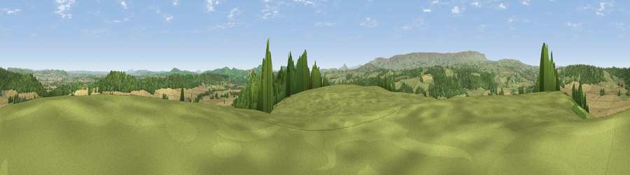

Newbarns Hill
#3733 in England · top 12% of its area beats it · near VowchurchThe view, rendered

A 360° render of this exact spot computed from the terrain model, tree cover and land cover — summer colours, afternoon light, calibrated against photographs of famous viewpoints. Real trees, hedges and buildings will differ in detail.
The panorama
Grey silhouette: terrain skyline in each direction (720 bearings, Earth curvature and refraction included). Dashed green: skyline with trees (+15 m) and buildings (+8 m) as obstacles. Blue strip: how far the ground is visible on each bearing.
Where the view opens
Wedge length = distance to the farthest visible ground on that bearing (vegetation-aware). Rings at 10, 25 and 50 km.
What fills the view
45% cropland · 32% grassland · 22% woodland
Angular shares of the visible panorama (visual magnitude), not map area. Landscape diversity 0.47 (0–1 Shannon).
Key numbers
More beautiful places nearby
The staircase of upgrades: each row has a higher view potential than everything closer. Driving times are estimates from straight-line distance, calibrated against real road routing — check an actual route before setting out.
| Place | Direction | Drive | Score |
|---|---|---|---|
| Viewpoint near Tyberton | N · 3 km | ~7 min | 74.5 |
| Viewpoint near Blakemere | NNW · 5 km | ~11 min | 75.5 |
| Viewpoint near Moccas | NNW · 8 km | ~16 min | 75.9 |
| Viewpoint near Longtown | SW · 10 km | ~20 min | 78.7 |
| Viewpoint near Kentchurch | SE · 11 km | ~20 min | 79.3 |
| Viewpoint near Orcop Hill | SE · 11 km | ~21 min | 80.7 |
| Garway Hill | SSE · 11 km | ~21 min | 84.6 |
| Millennium Hill | E · 38 km | ~57 min | 86.9 |
52.01066, -2.90091 · source: dobih hill · position refined by local search. Computed location — check access rights before visiting.